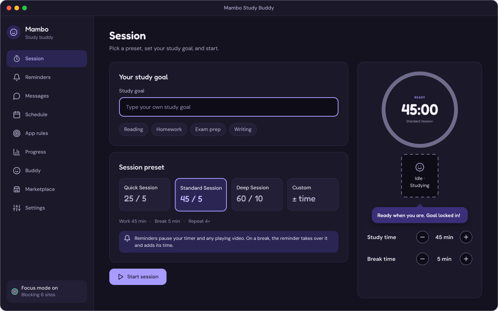
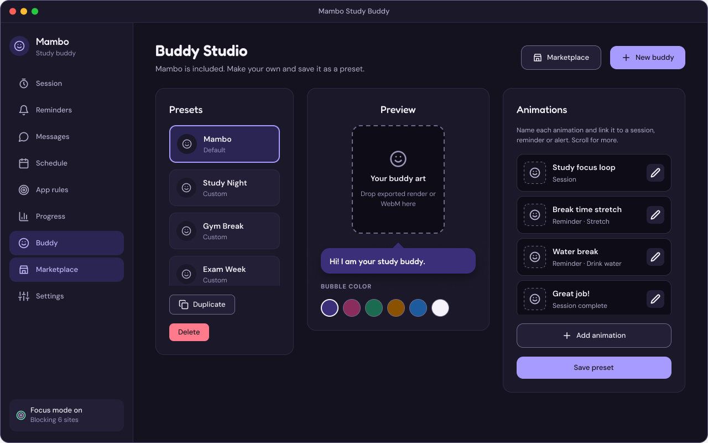
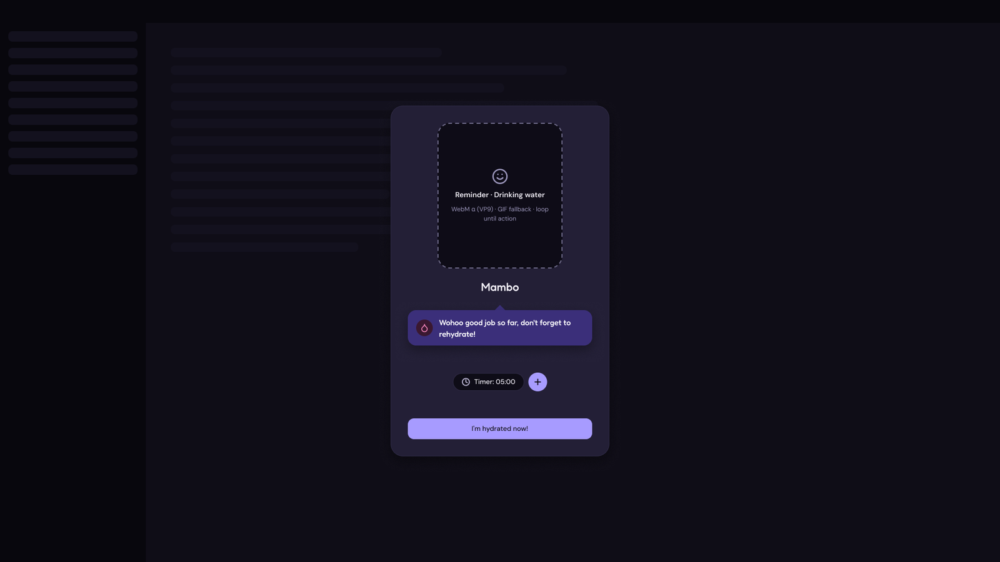
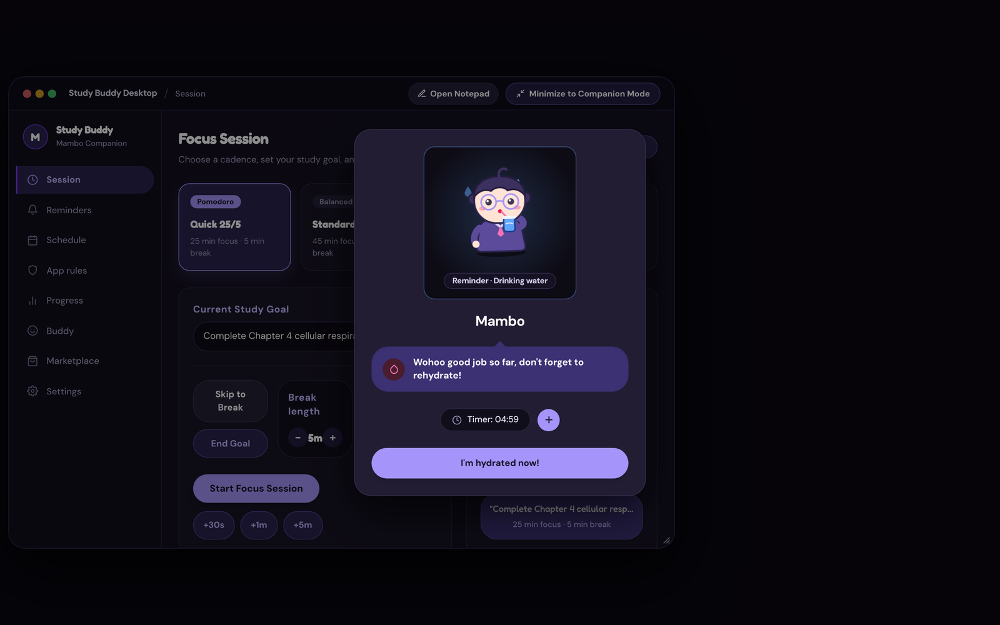
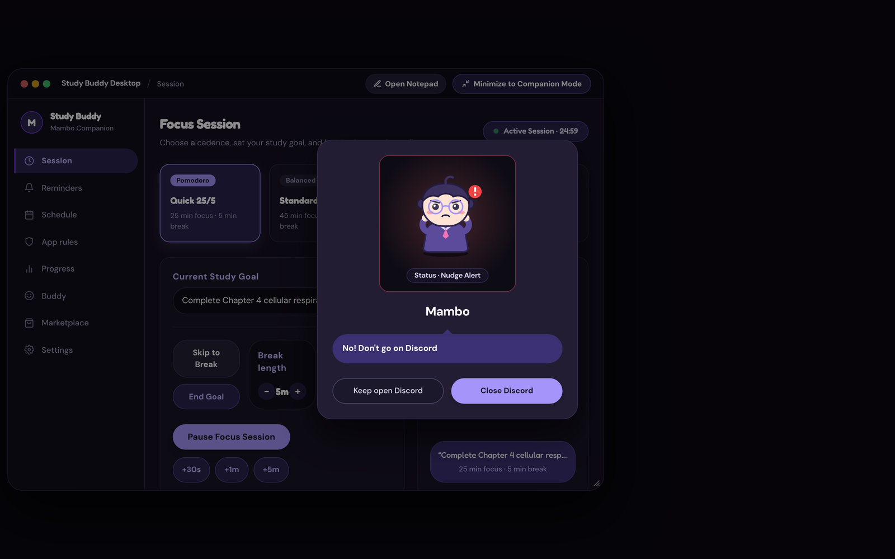
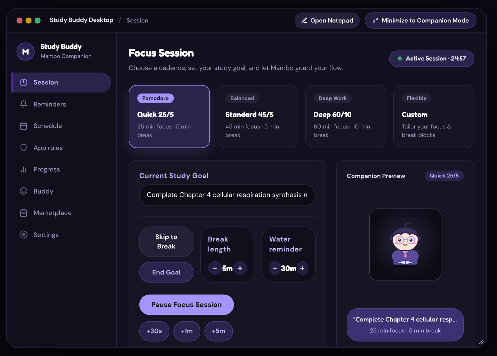
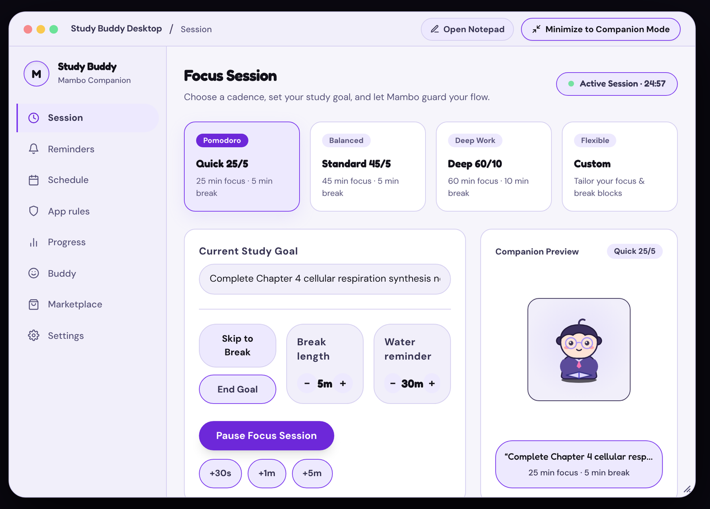
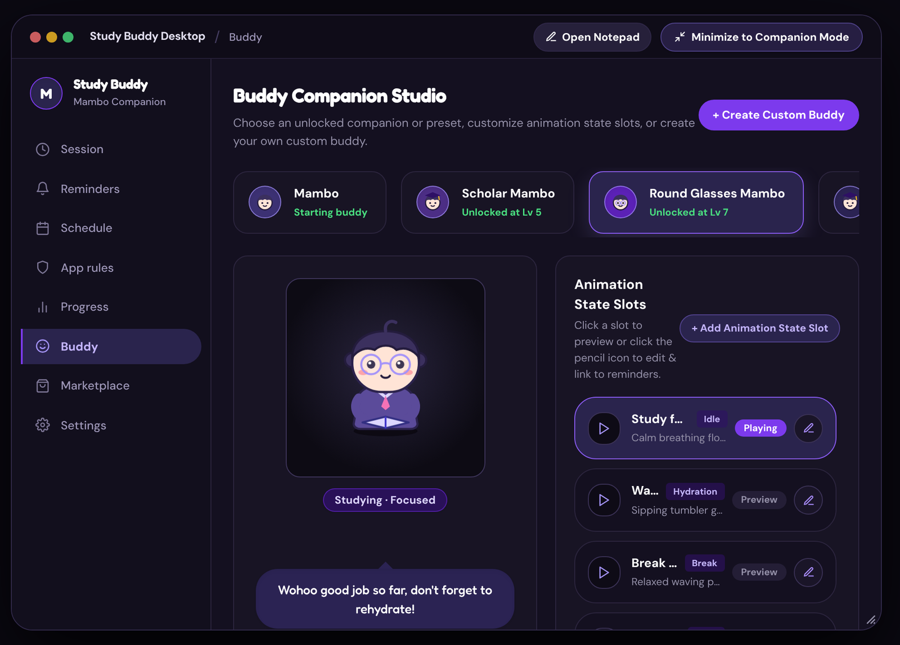
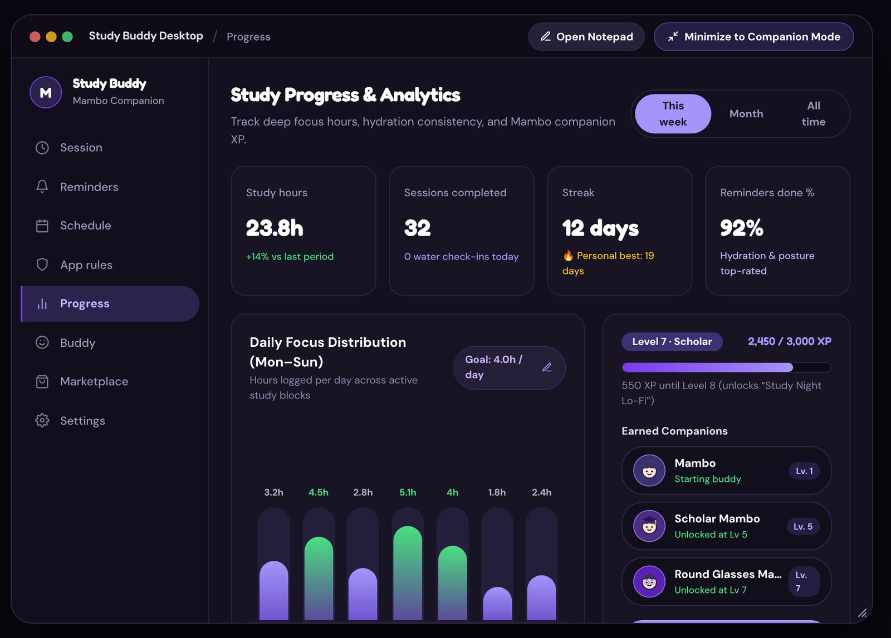

Study Buddy
Study Buddy is a desktop focus companion. A small mascot, Mambo, runs your study sessions and asks for breaks with friendly overlays instead of locking your screen. I designed it in Figma, then built it by articulating each change in plain language to Gemini and directing Gemini 4 Argon to generate the code, reviewing every round myself.
Focus without lockouts
Studying well takes structure: timers for focus and breaks, reminders to drink water, and blockers that point you back to the task. Study Buddy brings all of that together, with a small mascot named Mambo to gamify the session and make it feel less pressured. The timers, reminders, blockers and task times are all still there, and Mambo delivers them in a friendlier way.
Designed in Figma first
Before any code, I designed the desktop experience in Figma: the session, reminders, schedule, app rules, progress and buddy screens, the break overlays, and the Mambo widget with animation slots. Light and dark themes run on shared tokens, with Fredoka for the mascot's voice and timers and DM Sans for the interface.


From frame to working overlay
The break overlay is the heart of the product: a calm card over your work, with a small plus to postpone. The Figma frame had a placeholder for the character. The built version plays Mambo's states, and a gentler nudge appears for a distracting site.



Working with AI, on purpose
I built Study Buddy by directing AI, and I kept the product decisions. Each round followed the same loop.
Where human review changed the product
- Cut features that added clutter: the Messages tab, a focus-timer pill and the strict-blocking options.
- Made the window behave like a normal app: resizable, no fullscreen, and closing tucks it into Mambo.
- Found low-contrast text in light mode, such as buttons, tags and pills, then asked for WCAG AA contrast and sent targeted fixes. A formal audit is still to do.
- Replaced a mix of blue and purple with one purple palette, and added hover states to every desktop button.
- Added a confirmation dialog before deleting an account, clearing the notepad, deleting a reminder or signing out.
- Removed a cloud-sync card and an "iPhone connected" row from settings because they did not work yet.


The desktop app
Reminders you can edit, a schedule that wakes Mambo only during study blocks, and app rules that define which sites and apps should trigger a nudge. Automatic detection of those apps is the next build.
Companions and progress
Mambo is the starting companion. Levels unlock more, and each companion's animations can be linked to a reminder, a session or an alert. The progress screen tracks focus hours, streaks and level.


What's next
Study Buddy is in a rolling-update stage and the desktop app comes first.
- Test with students. This is the biggest gap and the first thing I plan to do.
- Real app detection. The nudge overlay works, but it is triggered from a developer control today.
- Mobile app, accounts and sync. Planned, not built. Notes and stats stay on the computer for now.
- A formal accessibility check of both themes.
View the code on GitHub · Watch the overlay demo on LinkedIn